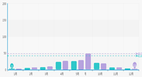

注册
|
登录
王学锋
退出
首页
专业大数据分析系统
大数据分析能力开放系统
数据运营平台
云数据开放平台
标题：
分类：
病害
虫害
全部
热度：
10000以上
5000-9999
2000-5000
500-1000
500以下
全部
发布日期：
1个月内
半年内
1年内
3年以上
全部
搜索
符合搜索条件的专题
共
42
篇
稻飞虱分布
中国北方，长江流域以南各省(自治区)发生较多。朝鲜、南亚次大陆和东南亚，也见于日本。褐飞虱在中国北方各稻区均有分布；长江流域以南各省(自治区)发生较烈。白背飞虱分布范围大体相同，以长江流域发生较多。这两种飞虱还分布于日本、朝鲜、南亚次大陆和东南亚。灰飞虱以华北、华东和华中稻区发生较多;也见于日本、朝鲜。3种稻飞虱都喜在水稻上取食、繁殖。褐飞虱能在野生稻上发生，多认为是专食性害虫。白背飞虱和灰飞虱则除水稻外，还取食小麦、高粱、玉米等其他作物。

稻飞虱迁入量
白背飞虱迁入虫量是左右主害代发生程度的重要基础，而决定种群发展前提是食料和气候条件。
湿度对稻飞虱的影响
褐飞虱喜温湿，生长与繁殖的适温为20—30℃，最适温度为26—28℃，相对湿度在80%以上。“盛夏不热，晚秋不凉，夏秋多雨”是褐飞虱大发生的气候条件；白背飞虱发育的最适温度为22～28℃，相对湿度为80%～90%。
稻飞虱品种
稻飞虱的发生与迁入虫量、气候、水稻品种和生育期、栽培管理技术、天敌有密切关系。
稻飞虱危害
多施或偏施氮肥，稻株徒长、叶色浓绿和茎秆幼嫩，为稻飞虱提供了丰富的氮素营养物质，危害较重。
稻飞虱生物特性
白背飞虱的习性与褐飞虱相近似，但食性较广。长翅型成虫也具远距离被动迁飞特性。在稻株上取食部位，比褐飞虱稍高，并可在水稻茎秆和叶片背面活动。
稻飞虱天敌
稻飞虱取食并使之获得丰富的营养，导致迅速繁殖。抗性品种植株中，上述氨基酸含量较低，而α-氨基丁酸和草酸含量却较高，对褐飞虱生存和繁殖不利。
稻飞虱迁飞路径
散点图相关介绍，柱状图相关介绍，K线图相关介绍
稻飞虱对水稻危害
稻飞虱对水稻的为害，除直接刺吸汁液，使生长受阻，严重时稻丛成团枯萎，甚至全田死秆倒伏外，产卵也会刺伤植株，破坏输导组织，妨碍营养物质运输并传播病毒病。
气候对稻飞虱影响
褐飞虱耐寒性弱,卵在0℃下经7天即不能孵化,长翅型成虫经4天即死亡。
白背飞虱
白背飞虱的习性与褐飞虱相近似，但食性较广。长翅型成虫也具远距离被动迁飞特性。在稻株上取食部位，比褐飞虱稍高，并可在水稻茎秆和叶片背面活动。
白背飞虱迁移路径
见于日本、朝鲜。3种稻飞虱都喜在水稻上取食、繁殖。褐飞虱能在野生稻上发生，多认为是专食性害虫。白背飞虱和灰飞虱则除水稻外，还取食小麦、高粱、玉米等其他作物。
每页显示
5
10
50
全部
条
上一页
1
2
3
4
5
6
7
...
下一页
共20页 / 390条数据
转到
页
×
请登录..
账号：
密码：
copyright@2011 JinheTech.ALL rights reserved.版权所有金禾天成 京ICP备11009730